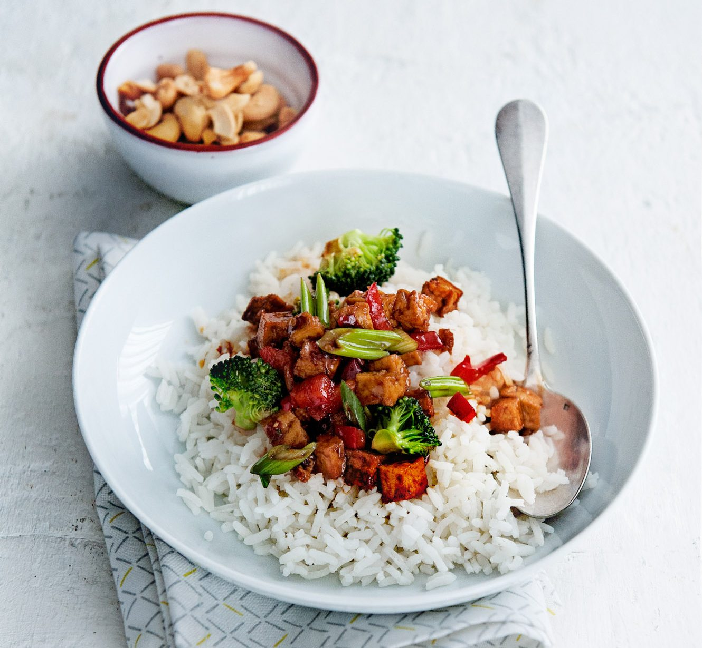

Tofu Rice Wok

Remember when you were kid and thought broccoli is the worst
thing ever? Well, not anymore!
Simple ingredients create this delicious and easy dish! Perfect
when you crave for something good yet fresh.
Only few minutes and it is ready! It would serve two people,
but the question is: do you want to share something this good?
Here's what you need:
- Tofu, 180g
- Rice, 150g
- Grated ginger, 2 tsp
- 1 garlic, chopped
- Broccoli, 125g
- 1 diced red bell pepper
- 1 spring onion
- Sweet chilli sauce, 2 tbsp
- Soy sauce, 2 tbsp
- Cashews, 50g
- Boil the rice. Heat a wok with vegetable oil. Wok the tofu for
few minutes. Add ginger and garlic. Continue frying for a couple
of minutes.
- Add broccoli and bell pepper. Continue frying for few minutes.
Lastly add spring onion (cutted into rings), sweet chilli sauce and
soy sauce.
- Serve on rice, sprinkle cashews on top!
Back to the Recipes